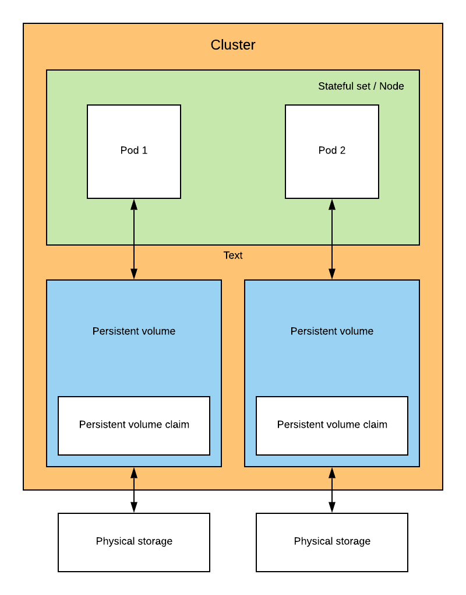

Persistent volume 💾
With Kubernetes and the StatefulSet deployment you are able to deploy stateful pods within your Cluster.
Deploying a Stateful application mean that this will involve a storage layer. Kubernetes provide a persistent volume API option for this kind of usage.
How does it work
A Persistent Volume is a piece of storage located in the Cluster. As the Persistent volume isn’t volatile as the Node & the pods. Persistent volume is the reason why it’s located in the Cluster and not within a Node.
Kubernetes support the following types of storage type of storage
Futhermore Persistent volume has a lifecycle. I suggest you to take a look at those there
Below is how the architecture can be between a PV and a Node

Representation of a statefulset with a storage
Types of Persistent volume 📁
There are 2 types of persistent volume. Below is the definition of each of them right from the Kubernetes documentation
Static 💿
Static provisioning allow a Cluster administrator to expose a set of persistent storage to the Cluster
A cluster administrator creates a number of PVs. They carry the details of the real storage which is available for use by cluster users. They exist in the Kubernetes API and are available for consumption.
Dynamic 🖥️
When none of the static PVs the administrator created matches a user’s PersistentVolumeClaim, the cluster may try to dynamically provision a volume specially for the PVC. This provisioning is based on StorageClasses: the PVC must request a storage class and the administrator must have created and configured that class in order for dynamic provisioning to occur.
This dynamic solution remove a lot of headache regarding how to create, delete and size up your storage.
Moreover if you don’t have a lot of knowledges in this field like me the writer 😅.
It’s far better to let the Kubernetes engine do the allocation of storage for us
Components
As we said in the section How does it work. The persistent claim (PV) is located in the Cluster.
In order to define the behavior of the Persistent volume, Kubernetes is using a PersistentVolumeClaim (PVC). This PVC allow us to define several options such as size, access-modes, labels.
While extensible if you need to have even more flexibility Kubernetes offer a deeper customization throught the StorageClass resources
Access modes 🔏
Creating a storage required you to define an access mode to your storage. Currently there are 3 types of access mode available
- ReadWriteOnce: a volume can be mounted as read-write by a single node
- ReadOnlyMany: a volume can be mounted read-only by many nodes
- ReadWriteMany: a volume can be mounted as read-write by many nodes
⚠️ From Kubernetes docs: A volume can only be mounted using one access mode at a time, even if it supports many. For example, a GCE Persistent Disk can be mounted as ReadWriteOnce by a single node or ReadOnlyMany by many nodes, but not at the same time.
Resources
Kubernetes storage introduction by IBM